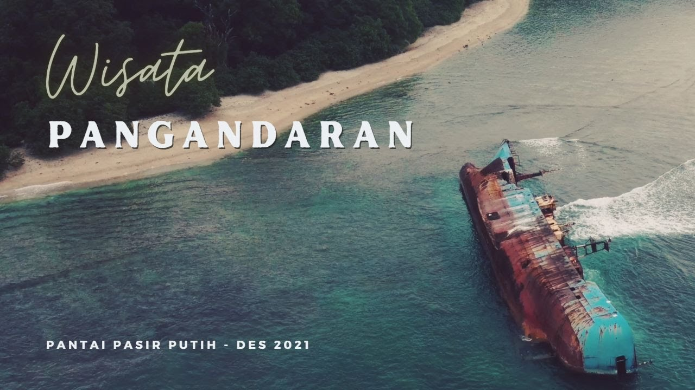

Keindahan Pantai Pasir Putih Pangandaran
dayatarik
2021/12/12
Pantai Pasir Putih Pangandaran menawarkan pesona keindahan alam, yang berpadu dengan hamparan pasir putih. Selain itu, masih satu kawasan dengan Taman Wisata Dan Cagar Alam, serta wisata Pantai Pangandaran, sebagai gerbang awalnya. Pantai Pasir Putih, sangat recommended untuk dijadikan destinasi wisata anda bersama keluarga, dengan daya tarik utamanya ialah hamparan pasir putihnya yang lembut.
spot Foto
Kapal Viking Lagos Yang Banyak Di kunjungi Wisatawan.

Ada Juga Goa Jepang Yang Dekat Dengan Pasir Putih
Aktivitas snorkeling dapat dilakukan jika kondisi air sedang pasang.
Gallery
Sebelum ke Tempat Lokasi Yang Lain Manjakan Mata anda Dahulu Di Sini